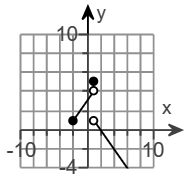

is defined as follows.
$
f(x) =
\begin{cases}
x + 3 \hspace{2.8em} \text{if} \enspace -2 \le x \lt 1 \\[3ex]
5 \hspace{4.55em} \text{if} \enspace x = 1 \\[3ex]
-x + 2 \hspace{2em} \text{if} \enspace x \gt 1
\end{cases} \\[7ex]
$
(a.) Find the domain of the function.
(b.) Locate any intercepts.
(c.) Graph the function.
(d.) Based on the graph, find the range.
(a.) The domain for the first piece are the real numbers from −2 (included) to 1 (excluded)
The domain for the second piece is 1.
The domain for the third piece are the real numbers greater than 1
This implies that the domain for the piecewise function are the real numbers from −2 (included) to infinity.
D = [−2, ∞)
(b.)
y-intercept
set
x = 0 and solve for
y
0 lies in the domain for the first piece, so we shall use the function in the first piece.
$
f(x) = x + 3 \\[3ex]
x = 0 \\[3ex]
f(x) = 0 + 3 \\[3ex]
f(x) = 3 \\[3ex]
$
y-intercept = (0, 3)
x-intercept
set
y = 0 and solve for
x for each piece
If the value of
x is in the domain for that piece, it is the
x-intercept; otherwise it is not.
$
\underline{1st\;\;piece} \\[3ex]
y = x + 3 \\[3ex]
x + 3 = y \\[3ex]
x = y - 3 \\[3ex]
y = 0 \\[3ex]
x = 0 - 3 \\[3ex]
x = -3 \\[3ex]
But:\;\;-3 \lt -2 \\[3ex]
-2 \gt -3 \\[3ex]
$
−3 is not in that domain
$
\underline{2nd\;\;piece} \\[3ex]
y = 5 \\[3ex]
x = 1 \\[3ex]
y \ne 0 \\[3ex]
$
This piece is not applicable.
$
\underline{3rd\;\;piece} \\[3ex]
y = -x + 2 \\[3ex]
x = 2 - y \\[3ex]
y = 0 \\[3ex]
x = 2 - 0 \\[3ex]
x = 2 \\[3ex]
2 \gt 1 \\[3ex]
$
2 is in the domain.
x-intercept = (2, 0)
| $y = x + 3$; $-2 \le x \lt 1$ |
| x |
y |
−2 (defined)
−1
0
1 (undefined)
|
1
2
3
4
|
| $y = 5$; $x = 1$ |
| x |
y |
| 1 (defined) |
5 |
| $y = -x + 2$; $x \gt 1$ |
| x |
y |
1 (undefined)
2
3
|
1
0
−1
|
(c.) The graph of the piecewise function is:

(d.) Based on the graph:
Based on the 2nd table:
5 is the maximum
y-value and it is defined.
Based on the 1st table:
1 is defined
4 is undefined
Values between 1 (included) and 4 (excluded) are included.
Also, there is no continuity from 4 to 5
Based on the 3rd table:
1 is not defined (not included)
All other values less than 1 are included.
This implies that the range real numbers from negative infinity up to 4 and the set, 5
R = [−∞, 4) ⋃ {5}
 For ACT Students
For ACT Students